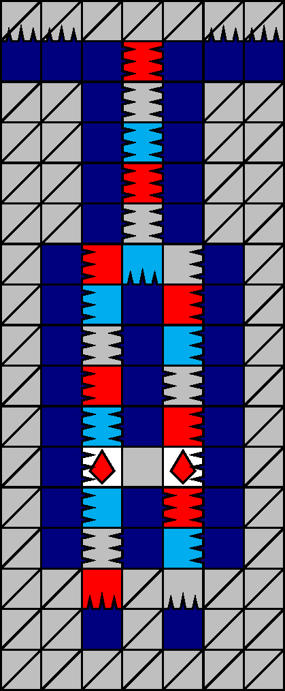
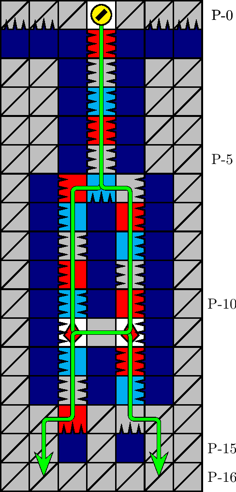

一般指針
エリア・シャフト


指針
シャフトは，両方のザクロを取得し， ±2 列から離脱します．前期では座標 P-(0, 0) 上方の安定を確保してから進入します．後期では P-(0, 0) 上方の安定に注意しつつ進入後速やかに潜行します．
解説
シャフトとは，図 3.2.10.1 のエリアを指します． 700 m型の 32 行目に確率で出現します． P-1 行目の針の配列によって同定されます．図 3.2.10.2 の経路が定型です．
前期における犬の潜行速度は比較的低いため，座標 P-(0, 0) 上方に幅 1 列の落下予定ブロックがある場合， P-6 行目への潜行が間に合わず落下ブロックに圧迫される可能性があります．前期においては， 0 列を直下掘りするか座標 P-(0 ,±1) を経由することで， P-(0, 0) 上方の安定を確保したうえでエリアに進入します． P-(0, 0) 上方に塊が出現した場合，ブロックの破壊順序によっては（極めて稀に） 0 列にヘコミが出現する可能性があることに注意します．
後期においては，犬の潜行速度が充分高いため， P-(0, 0) 上方に落下予定ブロックがあっても，落下猶予が充分残されている状況で進入後適切に潜行すれば，圧迫を受けずに P-6 行目まで到達できます．
座標 P-(16, 0) には壁が出現する場合があります．この場合， P-(15, 0) に進入すると， P-(14, ±1) に上方の石が落下してしまい，老衰するまで脱出できません．そのため， P-(16, 0) の状況にかかわらず，通常時からエリアの離脱は ±2 列から行うことが強く推奨されます．